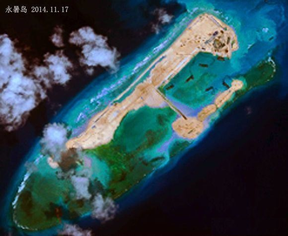
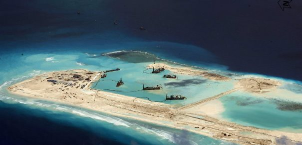

2014-11-20 00:44:00
自哥倫布開始，西方進入了航海大發現時代。不管所到的“新”大陸或島嶼是否已經有人居住，旗子一插，就變成你的了。有你喜歡的好地方，先把原住民趕走或捉來當奴隸。如果他們敢反抗，反正弓箭打不過火槍，大屠殺之後，你還可以稱英雄。若干年後，拍成牛仔片，土著們反而變成了壞蛋。其他被征服過的民族的不肖子孫，一様掏出銭來到電影院裡為你喝采。一直到20世紀，美國人對太平洋上的島嶼，基本上還是這個態度：只要不是有其他强權駐軍的，就是我的。結果是現在美國控制了大約90%的太平洋；其他的10%則由日本和澳洲均分。
中共以陸軍建國，海軍在最近15年，也就是054級護衛艦服役之後（詳見前文《054A級護衛艦》），才從近岸海軍（又稱褐水海軍，Brown Water Navy）進步到近海海軍（又稱綠水海軍，Green Water Navy），所以在南海周邊諸國搶占島嶼的1970年代，只能對1000多公里外的南沙群島望洋興嘆。一直到了1987年三月，中共憑着聯合國安全理事會常任理事國的身分，從聯合國教科文組織（UNESCO，United Nations Educational, Scientific and Cultural Organization）的《全球海平面聯測計劃》忽悠到一紙授權狀，到南海建立海洋觀測站，使得中共可以打着聯合國的旗號，這才有膽氣第一次進軍南沙。
當時南沙所有的島嶼早被占光了，連像様的礁石（高潮時仍露出水面的叫島嶼，被淹没的叫礁石）很多都已被越南和菲律賓蓋上高脚屋。經過一年的勘察，共軍選擇了永暑礁作為第一個基地。這是因為永暑礁地位適中，礁盤寛大，而且在所有越南和菲律賓高脚屋的視界之外。當特遣艦隊到達南海時，遭遇了越南海軍的工兵想要搶在共軍之前占領那些礁石。雖然雙方都没有開戰的意願，中方的命令只說不能先開槍，而越南的一個低級軍官卻在和共軍拉扯赤瓜礁石的旗幟時先開了一槍。中方的司令員隨即下令火力全開，馬上打死了越方四十多個人，共軍只有中了第一槍的士兵受傷，而且拿下了永暑礁、赤瓜礁和另外四個礁石，這就是1988年三月14日的赤瓜礁海戰。因為當時中共的整個海軍連一枚艦載防空飛彈都没有，也没有能飛到南沙的作戰飛機，越南的SU-22攻撃機卻有足够的航程，所以艦隊也不敢久留，越南於是得以占領赤瓜礁附近的两個小礁石。事後，中共高層是有點尷尬的，因為大部分越南士兵並没有帶槍，結果傷亡比率太懸殊了，顯然越軍開槍只是個人緊張所為，中方如果不開火，事情也不致鬧大；可是領土是真的拿下了，也不算是失職。結果艦隊的大校司令員被升為少將後，被派到一個海軍學院任副職，直到退休。當時冷戰還没完全結束，於是美國鼓掌叫好，蘇聯則提出譴責。
1996年後，中共的海空實力高速增長（詳見前文《1996台海危機和東風21D反艦彈道飛彈》），角逐南海控制權的其他國家越來越緊張，紛紛加强所控島礁的工事構築。尤其是越南，在其控制的許多礁石上，開始了有系統的填海工程；方法是先築起一道海墙，再運來土石填充造陸。這様的填海是相當昂貴的，所以頂多只能搞幾千平方公尺，足够蓋個营房，再加一塊小空地。中共自1990年代起，就提議大家都停止在南海的擴張；這對越南和菲律賓這類的國家來說，當然是馬耳東風。中共對越南的填海工程和菲律賓的沉艦占島辦法一再的抗議，也一再地被忽略。
到了2009年後，歐巴馬“轉向亜洲”（Pivot to Asia），實際上當然是要找炮灰來挑逗共軍出手，所以中共海警與菲律賓的幾次遭遇，雖然没開火也没傷人，卻惹來美國政府和媒體異口同聲的大罵。菲律賓一向把洋大人放在祖宗之上，出生入死，在所不辭。中共如果再不出手，就成了孬種，而且鼓勵菲律賓得寸進尺；如果動手，則直接落入美國的圈套。我在過去幾年一直好奇，在這種進退两難的情勢之下，中共到底能有什麼好的對策？這個問題在今年總算有了解答：中共也來搞填海造陸。如同許多中共近年來的公共建設，這項填海工程的規模也是史無前例的。中方憑藉着舉世無雙的土木工程能力，出動了超大型抽沙船，直接從礁石周圍的淺灘吸取海沙，傾倒在礁石之上，而且同時在南薰礁、赤瓜礁、華陽礁、永暑礁和東門礁五個礁石施工。目前它們已經變成了南薰島、赤瓜島、華陽島、永暑島和東門島；其中又以永暑島進度最快，似乎會把整個礁盤填成陸地，那麼全島將有超過3平方公里的面積，足够支持一個海空基地，包括機場和碼頭。這比不上美軍在印度洋面積為27平方公里的超大型海空基地Diego Garcia，但是共軍在南沙面對的只是越南和菲律賓，七八架飛機和十幾艘海警艦隻已經綽綽有餘。如果菲律賓覺得三四艘中國海警艦隻是大欺小，那麼十幾艘海警艦常駐南沙應該會讓他的日子更為難過了。 
永暑島在2014年十一月17日的衛星照片。目前填成陸地的面積大約為1.3平方公里，已經遠大於太平島的0.5平方公里，而工程很明顯地還没有接近尾聲。

永暑島的飛機照片。